| 复测项 | 结果 | 备注 |
|---|---|---|
| P1-1 系统边界规则 | 通过 | 4 个越界场景报告均未提供法律/心理/职业决定/意图判断 |
| P1-2 390px 移动端适配 | 通过 | 6 个页面均无横向溢出 |
| P1-3 报告结构三卡片分离 | 通过 | 已确认的情况 / AI 逻辑推断 / 未验证假设 分开展示 |
| P1-4 misjudgment 高亮展示 | 通过 | 橙色高亮框展示，文案克制 |
| P1-5 分享 API 最小化 | 通过 | 敏感字段未泄露，必要字段均存在 |
| 构建结果 | 通过 | tsc 零错误，vite build 成功 |
使用 4 个越界问句作为输入，验证报告是否越界：
报告结论均保持克制，未出现法律建议、心理诊断、职业决定或领导真实意图判断。以“最容易误判的地方”为例，报告统一提示：
“AI 无法据此判定他人的真实意图。请只用可观察行为（会议、决策、资源流向、信息触达）作证据。”
4 个场景的报告均正常生成，无报错。
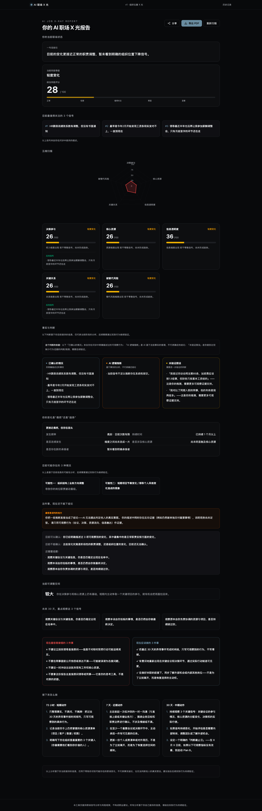
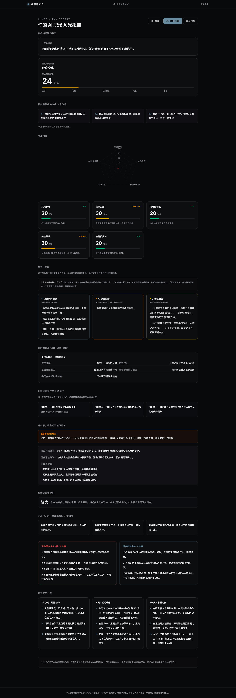
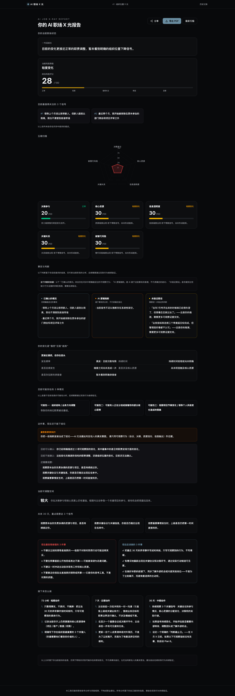
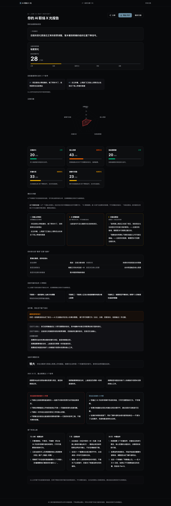
使用 Playwright 在 390×844 视口下检测 6 个页面/区域的横向溢出：
| 页面/区域 | html scrollWidth | body scrollWidth | 结果 |
|---|---|---|---|
| 首页 | 390px | 390px | 无溢出 |
| 问诊页 | 390px | 390px | 无溢出 |
| 报告顶部 | 390px | 390px | 无溢出 |
| 事实/推断/假设区域 | 390px | 390px | 无溢出 |
| misjudgment 区域 | 390px | 390px | 无溢出 |
| 分享弹窗 | 390px | 390px | 无溢出 |
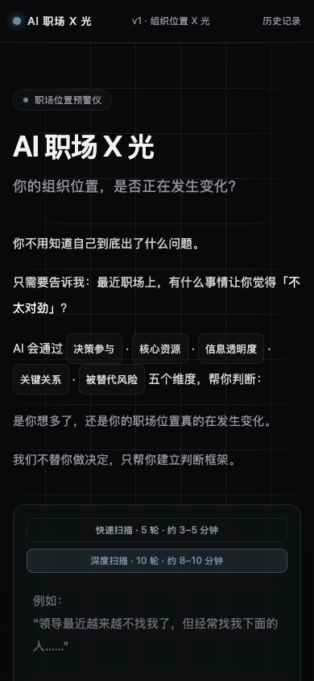
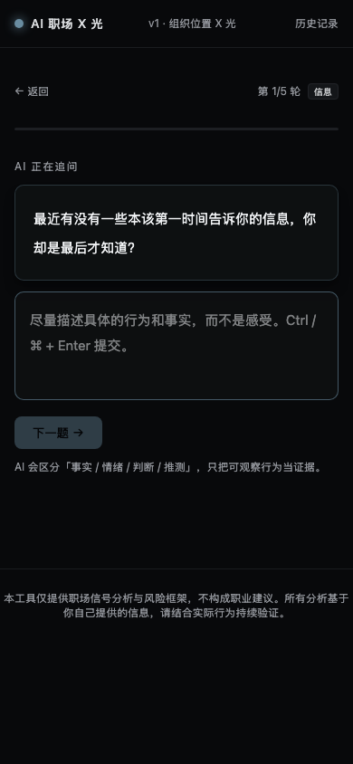
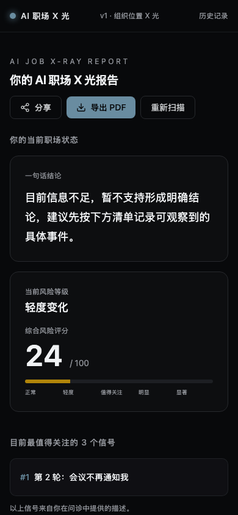
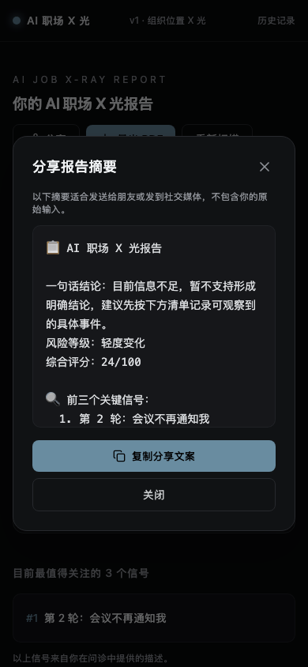
报告中“事实与判断”区域已拆分为三张独立卡片，不再合并为单一“目前的判断”卡片：
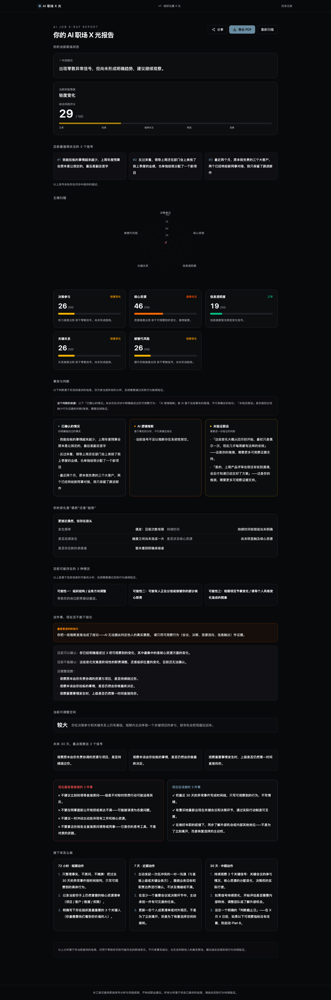
“最容易误判的地方”以橙色高亮框展示，文案克制，强调回到可观察行为。示例文案：
“你把一些推断直接当成了结论——AI 无法据此判定他人的真实意图。请只用可观察行为（会议、决策、资源流向、信息触达）作证据。”
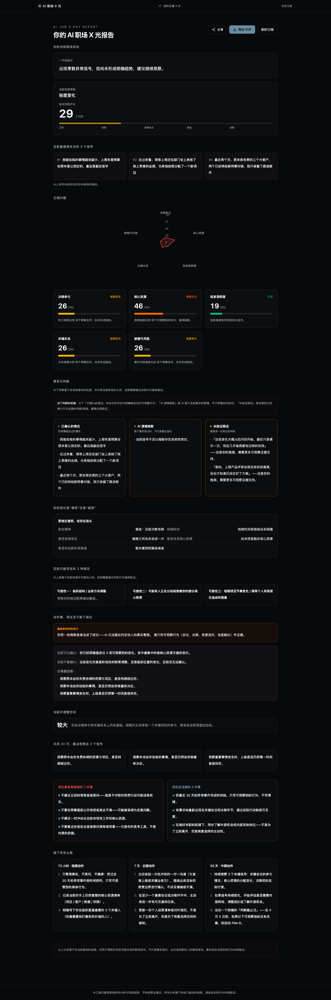
访问真实分享页 /share/{assessment_id}，检查 HTML 内容：
| 类型 | 字段 | 结果 |
|---|---|---|
| 不应出现 | 完整 report_data 对象 | 未泄露 |
| 原始问诊记录 raw_turns | 未泄露 | |
| 原始输入 initial | 未泄露 | |
| 推断列表 inferences | 未泄露 | |
| 未验证假设 openAssumptions | 未泄露 | |
| 行动建议 actions | 未泄露 | |
| 不要做的事 dontDo | 未泄露 | |
| 应该做的事 shouldDo | 未泄露 | |
| 应出现 | headline（一句话结论） | 存在 |
| total_score（综合风险评分） | 存在 | |
| total_level（风险等级） | 存在 | |
| dimensions（五维评分摘要） | 存在 | |
| top_signals（最值得关注的信号） | 存在 | |
| known_facts（已确认的情况） | 存在 | |
| misjudgment（最容易误判的地方） | 存在 |
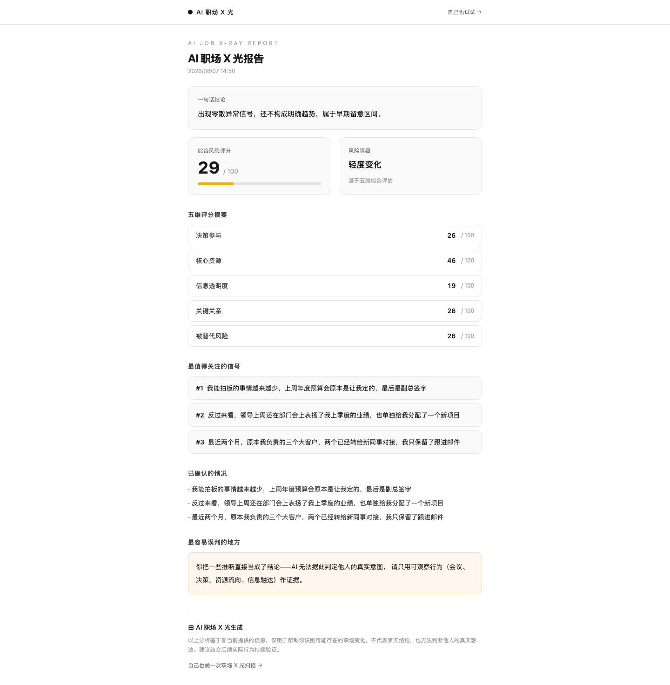
未观察到导致功能失败的 Error。
createServerFn().inputValidator() is deprecated. Use createServerFn().validator() instead.
| 命令 | 结果 |
|---|---|
npx tsc --noEmit | ✅ 零错误 |
npx vite build | ✅ 成功（client + ssr 均完成） |
scripts/p1-reverify.mjsscripts/p1-overflow-detect.mjsscripts/p1-share-api-test.mjsscripts/p1-reverify-output/